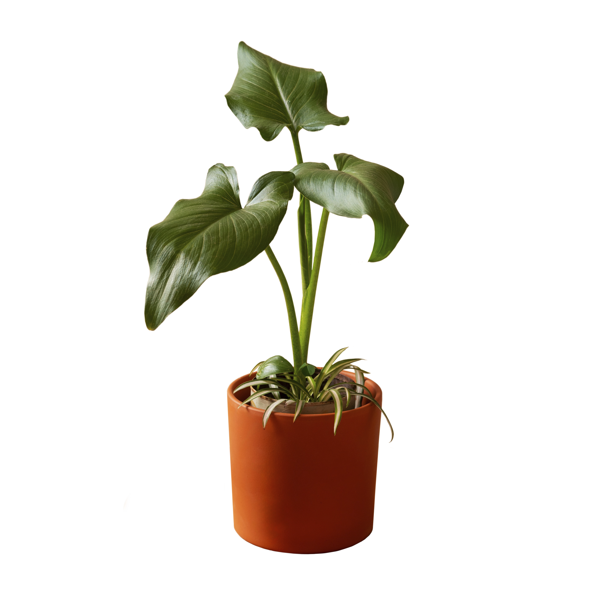
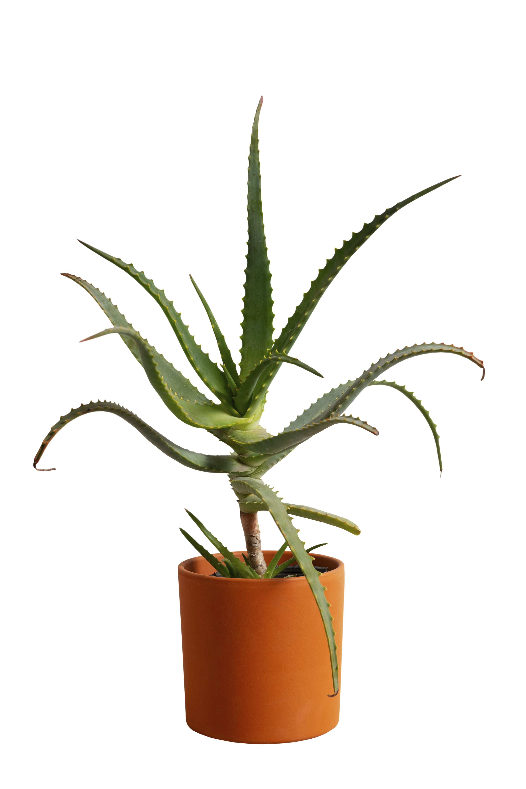

Escolha espécies adequadas
Prefira plantas compatíveis com ambientes compartilhados por animais de estimação.
Espécies selecionadas para trazer mais vida, cor e aconchego ao seu lar.

Marcantes e versáteis, as folhagens tropicais são valorizadas por seu impacto visual e pela capacidade de transformar ambientes internos. Com folhas amplas e formas orgânicas, adicionam textura, profundidade e uma sensação de conexão com a natureza sem exigir flores para se destacar.

Reconhecida por sua resistência e fácil manutenção, a Aloe Vera é uma das espécies mais populares para cultivo doméstico. Seu visual escultural e suas folhas marcantes combinam perfeitamente com ambientes modernos, trazendo personalidade e um toque natural à decoração. Adaptável a diferentes espaços e exigindo poucos cuidados, é uma excelente escolha para quem busca praticidade sem abrir mão da beleza.
Prefira plantas compatíveis com ambientes compartilhados por animais de estimação.
Cada pet reage de forma diferente às plantas. Acompanhe essa convivência nos primeiros dias.
Utilize vasos firmes e locais adequados para evitar quedas e acidentes.
No Jardim Pet, acreditamos que natureza e bem-estar caminham juntos, criando ambientes mais acolhedores para toda a família.
*E outras espécies. Consulte disponibilidade em nossa loja.